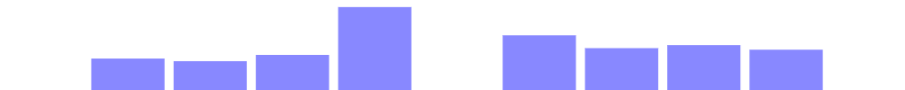
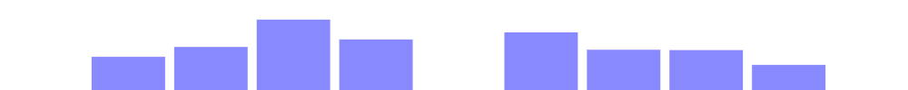
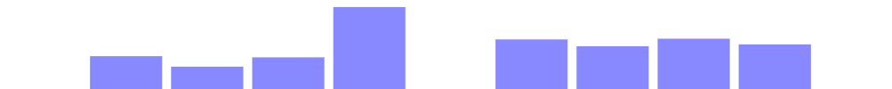
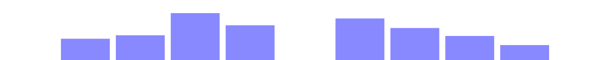
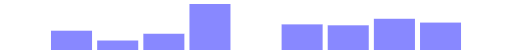
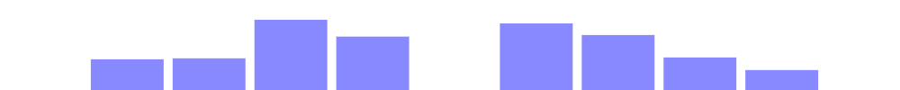

Ergo‑L ou Bépo ?
- Ergonomie
Une priorité pour Ergo‑L bien plus que pour Bépo. - Optimisation
Dvorak pour Bépo, Colemak/Workman pour Ergo‑L. - Typographie
Deux approches différentes. - Programmation
La spécialité d’Ergo‑L. - Variantes de Bépo
Ergonomie
Bépo
Conservant l’approche AZERTY, qui consiste à avoir certaines lettres
accentuées en direct (é, è, à ,
ç), Bépo a manqué de place
pour placer toutes les lettres et a choisi d’occuper les colonnes
excentrées pour des lettres jugées moins fréquentes (m,
z, w, ç, « les quatre cavaliers
de l’auriculaire »). Cela le rend quasi incompatible avec la plupart des
claviers ergonomiques du marché, qui ne proposent que 6 colonnes de
touches par main pour respecter le principe 1DFH.
Par ailleurs, la charge des doigts est mal répartie :
- la charge de l’index gauche est très élevée (> 23 % en français), et c’est d’autant plus gênant que ce doigt gère à lui seul la moitié des digrammes de même doigt ;
- plus grave, la charge de l’auriculaire droit (> 11 % en français) est bien plus élevée que dans toutes les dispositions de clavier francophones, optimisées ou non ;
- une grande partie des touches doublées se trouve sous l’auriculaire droit — et souvent en extension !
C’est notamment le cas du m : 13e lettre la plus
fréquente en français (2.7 % de fréquence, soit plus que tous les
caractères accentués cumulés), fréquemment doublé et en extension
latérale sur l’auriculaire droit. Cela favorise grandement les
déviations ulnaires, qui sont la principale cause de développement de
troubles musculo-squelettiques associés à la saisie au clavier.
Beaucoup de Bépoètes ont recours à des claviers spécifiques, souvent très onéreux, pour réduire l’inconfort de ces touches placées sous l’auriculaire en extension.
Enfin, par inspiration Dvorak, Bépo a renoncé aux raccourcis clavier positionnels Ctrl‑ZXCV.
Ergo‑L
Ergo‑L se veut ergonomique avant tout. À ce titre, il suit une approche 1DFH stricte, plaçant les 26 lettres et les 4 principales ponctuations dans le pavé central de 3×10 touches, garantissant une compatibilité parfaite avec tous les claviers de 33 à 105 touches, ergonomiques ou non.
Cette approche permet aussi de garder les chiffres en direct, rendant le pavé numérique inutile. On peut ainsi utiliser des claviers compacts qui favorisent une meilleure posture de travail, notamment quand on utilise la souris de la main droite.
Les auriculaires sont préservés, en particulier le droit, qui est en charge des touches Entrée et Backspace sur la plupart des claviers (et celles-ci ne sont pas comptées dans ces métriques).
Les lettres fréquemment doublées (e.g. L, N, M) sont placées sous les index.
Les raccourcis clavier positionnels Ctrl‑ZXCV ainsi que Ctrl‑QAS sont préservés, mais le C a été déplacé pour permettre un gain d’optimisation très sensible.
| Bépo | Ergo‑L | |||||||||||||||||||||||
|---|---|---|---|---|---|---|---|---|---|---|---|---|---|---|---|---|---|---|---|---|---|---|---|---|
|  | fr |  | ||||||||||||||||||||||
|  | fr‑en |  | ||||||||||||||||||||||
|  | en |  | ||||||||||||||||||||||
|
max. |
|
De notre point de vue : Bépo a été optimisé au détriment de l’ergonomie, notamment en surchargeant beaucoup trop l’auriculaire droit et en s’aliénant la plupart des claviers ergonomiques.
Optimisation
Bépo
Bépo applique au français une optimisation de type Dvorak :
- maximisation de l’alternance des mains lors de la frappe ;
- répartition des touches de façon équitable sur les deux mains ;
- utilisation en priorité de la rangée centrale, puis haute, puis inférieure ;
- en cas de non-alternance des mains sur un digramme, direction de la frappe vers le centre du clavier, ce qui sollicite davantage les doigts les plus habiles, à savoir l’index et le majeur.
Bépo cherche également à minimiser le taux de digrammes de même doigt, que nous mesurons à 2.6 % en français contre 8.0 % pour l’AZERTY. C’est un score très proche de celui obtenu par Dvorak en anglais, là où QWERTY est à 7.2 %.
Cette optimisation est faite au détriment de l’anglais :
- la charge de l’auriculaire droit grimpe à 13.7 % ;
- certains digrammes, notamment
wh, sont rédhibitoires.
Ergo‑L
Ergo‑L reprend les principes ci-dessus mais intègre les inspirations Colemak et Workman :
- on privilégie les roulements aux alternances de main :
- les alternances de main étaient nécessaires à l’époque des machines à écrire mécaniques pour éviter de coincer les marteaux, mais ne le sont plus aujourd’hui ;
- les roulements permettent de faire moins d’erreurs de saisie à haute vitesse, tout en restant très confortables ;
- on évite les colonnes centrales qui requièrent une extension de l’index ;
- faute de pouvoir utiliser les positions de repos, on privilégie les
touches :
- de la rangée supérieure pour l’annulaire et le majeur ;
- de la rangée inférieure pour l’index ;
- on fait le choix de conserver les raccourcis clavier positionnels, l’impact sur les métriques d’optimisation étant négligeable en regard des gains déjà effectués sur Bépo et Dvorak.
Malgré ces compromis et le fait qu’il soit optimisé pour les deux langues, français et anglais, Ergo‑L affiche de meilleures métriques d’optimisation, tant sur la charge des doigts (voir § précédent) que sur le taux de digrammes de même doigt :
| AZERTY | Bépo | Ergo‑L | Dvorak | QWERTY | |
|---|---|---|---|---|---|
| fr | 7.97 % | 2.55 % | 1.22 % | 3.31 % | 7.16 % |
| en | 6.31 % | 3.01 % | 1.20 % | 2.62 % | 5.76 % |
De notre point de vue : l’optimisation de Bépo est faite au détriment de l’anglais et de l’ergonomie, et elle est (très) inférieure à celle que propose Ergo‑L dans les deux langues.
Typographie
Bépo
Bépo gère les caractères accentués de façon similaire à AZERTY :
- certaines lettres comme
éèÃçsont accessibles directement ; - l’accent circonflexe et le tréma sont faits avec une touche morte (le tréma nécessitant en plus AltGr avec Bépo) ;
- certains caractères nécessitent la touche AltGr, ce qui
complique les enchaînements :
ù,œ,æ, points de suspension…
De plus, Bépo propose beaucoup de caractères spéciaux (i.e. non liés à la langue française ou au code informatique) via la couche AltGr ou des touches mortes, au prix d’une certaine complexité des pilotes de clavier :
- les pilotes Windows existent en deux versions, l’une « tronquée » et stable, l’autre « complète » mais dont le comportement est présenté comme moins fiable ;
- le pilote Linux, théoriquement inclus à XKB, se base sur des définitions de touches mortes qu’il faut ajouter manuellement côté utilisateur.
Ergo‑L
Ergo‑L utilise une touche morte de type Lafayette pour tous les caractères accentués et ponctuations spéciales : la fluidité des enchaînements est préservée, et la touche AltGr peut être dédiée aux seuls symboles de programmation.
Cette touche morte occasionne des frappes supplémentaires sur un texte francophone :
- 1.0 % pour
è,Ã,ç,Å“,æ - 1.5 % pour le seul
é - 1.5 % si on utilise l’apostrophe typographique (
’) plutôt que l’apostrophe droite (')
… soit environ 4 % de frappes supplémentaires. Pour une vitesse de saisie de 60 mots/minutes, on perd ainsi 2 mots/minute en Ergo‑L.
Le support typographique du français est tout aussi complet que celui de Bépo, mais pour les autres caractères spéciaux Ergo‑L se contente des touches mortes standard définies dans XKB, afin de proposer des pilotes plus robustes. Les autres caractères spéciaux sont laissés à la touche Compose.

De notre point de vue : la saisie de la plupart des caractères accentués est plus intuitive avec Bépo. L’approche d’Ergo‑L permet d’éviter les extensions de doigts mais nécessite un apprentissage.
Programmation
Avec son optimisation pour l’anglais et sa couche dédiée aux symboles de programmation en AltGr, Ergo‑L est de loin la disposition la plus adaptée à la programmation. Comme pour les lettres en français et en anglais, les symboles sont placés de façon à faciliter les enchaînements et éviter les touches répétées sous les auriculaires.

La touche AltGr reste facultative, les symboles étant également disponibles aux emplacements du QWERTY ANSI, une disposition de clavier perçue comme efficace pour cet usage.
Variantes de Bépo
De par son ancienneté, Bépo a vu naître de nombreuses variantes libres qui ont repris la philosophie initiale :
- toutes les voyelles à gauche (approche Dvorak) ;
- les lettres sont étalées sur toutes les colonnes du clavier ;
- les chiffres restent en Shift.
Et, très logiquement, ces variantes présentent les mêmes défauts d’ergonomie :
- compatibilité délicate avec la quasi-totalité des claviers ergonomiques ;
- surcharge importante de l’auriculaire droit ;
- perte des raccourcis claviers positionnels.
Optimot est une variante non-libre de Bépo qui l’optimise très nettement : le taux de digrammes de même doigt est divisé par deux en anglais et par trois en français ! Mais les défauts d’ergonomie restent les mêmes, ou ne sont atténués que très marginalement :
- les lettres excentrées posent toujours le même problème de compatibilité avec les claviers ergonomiques ;
- la charge de l’auriculaire droit est diminuée en anglais mais reste strictement identique pour le français littéraire (11.2 %) et s’accroît dès que l’on utilise des symboles de programmation, dont l’accès recommandé par l’auteur se fait via une touche morte placée sous l’auriculaire en extension.
[EDIT] : l’auteur d’Optimot précise qu’il mesure 10.3 % de charge sur l’auriculaire droit et non 11.2 % comme vu par notre analyseur, mais fait valoir son droit au secret concernant le corpus et la méthode utilisés. Cela reste beaucoup trop élevé à notre avis — à comparer aux 6.9 % pour Ergo‑L. [/EDIT]
De notre point de vue, les deux dispositions portent bien leur nom :
- Optimot est une optimisation de Bépo qui apportera un gain de confort aux utilisateurs satisfaits de Bépo ;
- Ergo‑L est ergonomique avant tout, et apportera une solution radicale aux personnes qui ont des difficultés avec Bépo.